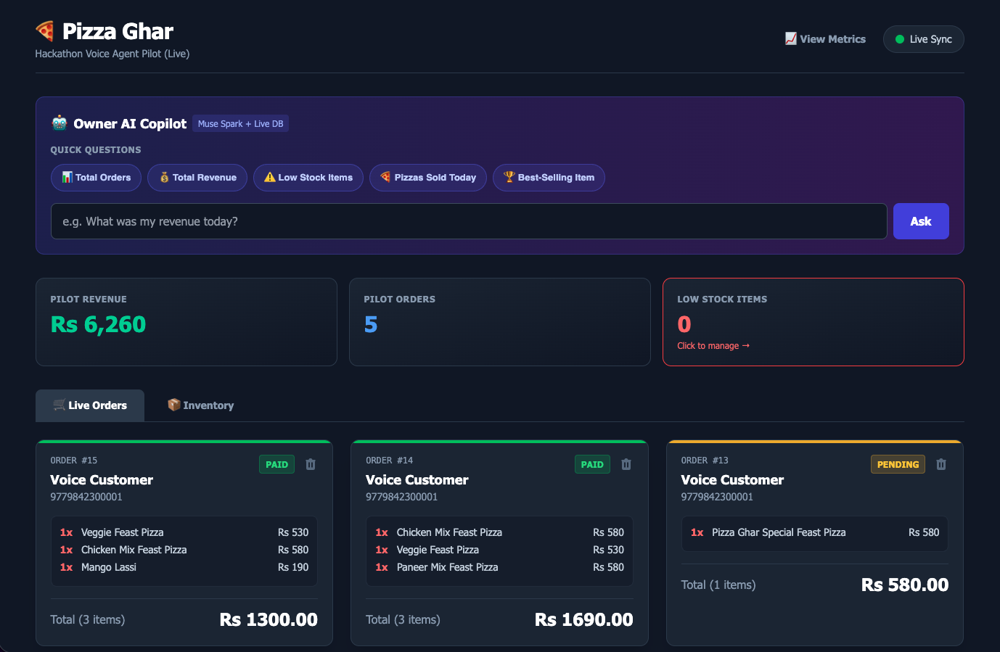
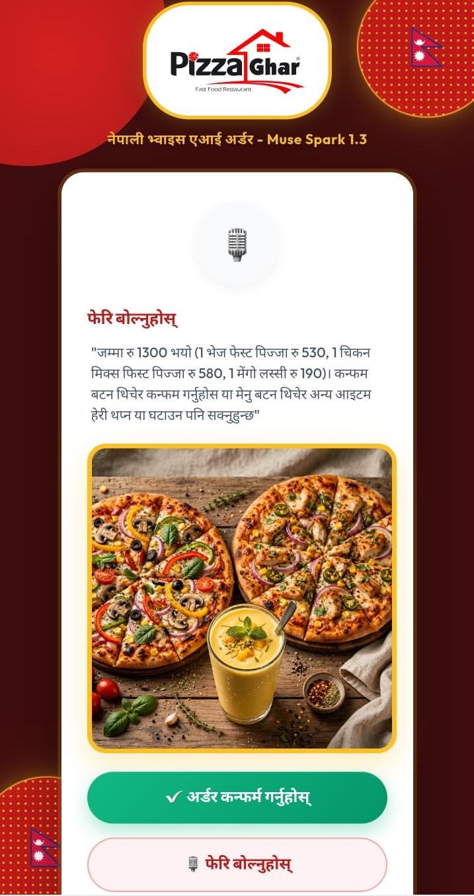

We took a live business in Nepal (116 customers, 5 shops) and upgraded it with 3 Meta AI models. Voice ordering in Nepali/Hinglish. Deterministic backend. Autonomous SQL analytics.
Live orders, inventory, and the Agentic SQL Copilot.

Multimodal ordering in Nepali with AI-generated food visuals.

Extracts strict JSON from messy Nepali audio. Powers both the customer cart state machine and the autonomous owner text-to-SQL agent.
Generates a mouth-watering, professional photograph of the exact cart items asynchronously while the AI voice confirms the order.
Integrated as a high-availability fallback for speech-to-text, ensuring the restaurant never misses an order.
The LLM only extracts JSON. A strict Node.js state machine controls the flow, preventing the AI from inventing items or skipping payment.
The owner asks "Which items are low on stock?". Muse Spark writes a MySQL query (using JSON_TABLE), executes it, and speaks the answer back.